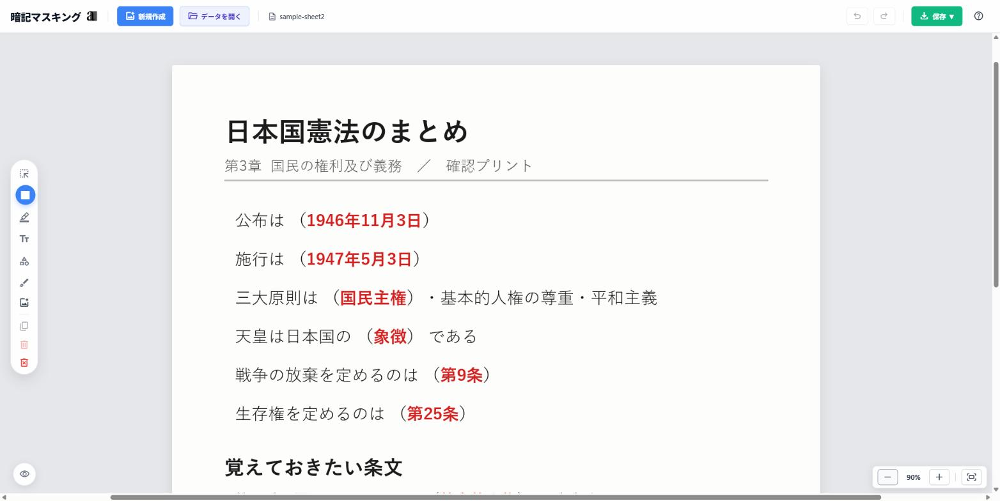

教科書や授業の資料をPDFや写真で取り込み、覚えたい部分をなぞって黒く隠すだけ。 隠した所はカーソルを合わせると答えが見えます。登録もインストールも要らず、ブラウザだけで動く無料のアプリです。

紙の赤シートは、赤いペンで書いた文字に緑の下敷きを重ねて消す道具です。 暗記マスキングは仕組みが違い、覚えたい部分の上に黒い四角を重ねて隠します。 赤い文字を用意する必要はなく、印刷された教科書やコピーした資料にもそのまま使えます。
隠した部分は、カーソルを合わせると一時的に答えが見えます。 覚えたかどうかを確かめて、また離せば隠れる。使い方は赤シートと同じで、 元の教材に赤ペンを入れる手間だけが要らなくなる、と考えてください。
色は黒で固定です。赤や緑のシートを再現するものではないので、 「赤いシートで隠したい」という目的の道具ではありません。目的が「答えを隠して覚える」ことなら同じ用途に使えます。
「新規作成」からPDFか写真を選びます。教科書を撮った写真、授業で配られたPDF、 問題集をスキャンした画像など、手元にあるものをそのまま使えます。複数ページのPDFにも対応していて、 ページ一覧から行き来できます。
マスクの道具を選んで、隠したい語句の上をドラッグします。四角で囲うほか、 手書きでなぞって好きな形に隠すこともできます。位置や大きさは後から動かせるので、 ずれても直せます。
黒く隠れた部分にカーソルを合わせると、その場所だけ答えが見えます。 「学習モード」に切り替えると編集の道具が隠れ、めくることだけに集中できます。 まとめて答え合わせをしたいときは、すべての黒塗りを一度に外すこともできます。
赤シートのアプリは携帯端末向けのものが主流で、多くはApp StoreやGoogle Playからの インストールが必要です。暗記マスキングはパソコンのブラウザで動くので、置かれている状況が違います。
| 暗記マスキング | 一般的な赤シートアプリ | |
|---|---|---|
| 使える機器 | パソコン（Windows・Mac） | 主に携帯端末向け |
| 準備 | ブラウザで開くだけ。登録なし | インストール。会員登録が要るものも |
| 取り込めるもの | PDF（複数ページ）・写真 | 写真が中心。PDF対応は製品による |
| 隠し方 | 四角でも手書きでも、好きな形に | 四角い範囲で隠すものが多い |
| 書き込み | テキスト・手書き・蛍光ペン・図形・画像 | 隠す機能が中心のものが多い |
| 持ち出し | PDF・画像で保存（元の画質のまま） | アプリの中で見るのが基本 |
| 料金 | 無料 | 無料。一部の機能が有料のものも |
右側は特定の製品ではなく、赤シートアプリ全般に見られる傾向をまとめたものです。
逆に言えば、外出先で手早く済ませたいだけなら携帯端末向けの専用アプリのほうが軽快です。 パソコンで資料を広げて作りたい、PDFをそのまま扱いたい、隠すだけでなく書き込みもしたい—— このどれかに当てはまるなら暗記マスキングが向いています。
教科書やノートを写真に撮り、用語と年号を隠して繰り返す。ノートを作り直すより速く、 範囲が変わっても隠す場所を足すだけで済みます。
宅建・簿記・看護師国家試験のように、PDFの過去問やテキストを持っている勉強と相性がいい構成です。 範囲が広くても、覚えていない所だけ隠し足していけます。
配布されたPDFに直接、答えを隠す黒塗りと補足のメモを両方入れられます。 資料を作り直さずに、そのまま暗記用に変えられます。
無料です。会員登録もログインも要りません。ページを開けばすぐ使えます。
ありません。パソコンのブラウザで開くだけで使えます。Windows・Macのどちらでも同じように動き、 ソフトのインストールも会員登録も不要です。
送られません。PDFや写真の処理はすべて自分のブラウザの中で行われ、 ファイルがサーバーに上がることはありません。試験問題や個人情報を含む資料でも安心して使えます。
黒塗りの上にカーソルを合わせると、その部分だけ一時的に見えます。 すべての黒塗りをまとめて外して答え合わせをすることもできます。
できます。黒塗りや書き込みを載せた状態で、PDFや画像として書き出せます。 元がPDFの場合は画質を落とさずに書き出します。
できます。作業データを .amk という形式で保存し、「データ読込」から呼び戻せます。 保存を忘れたときのために自動保存も入っており、ブラウザの中に一時的に残ります。
使えます。ページ一覧から好きなページへ移動でき、ページごとに黒塗りや書き込みを入れられます。 書き出しのときも全ページがまとまって出ます。
使えます。手書きのノートを写真に撮って読み込めば、印刷物と同じように隠せます。 四角で囲いにくい形は、手書きのマスクで自由になぞってください。